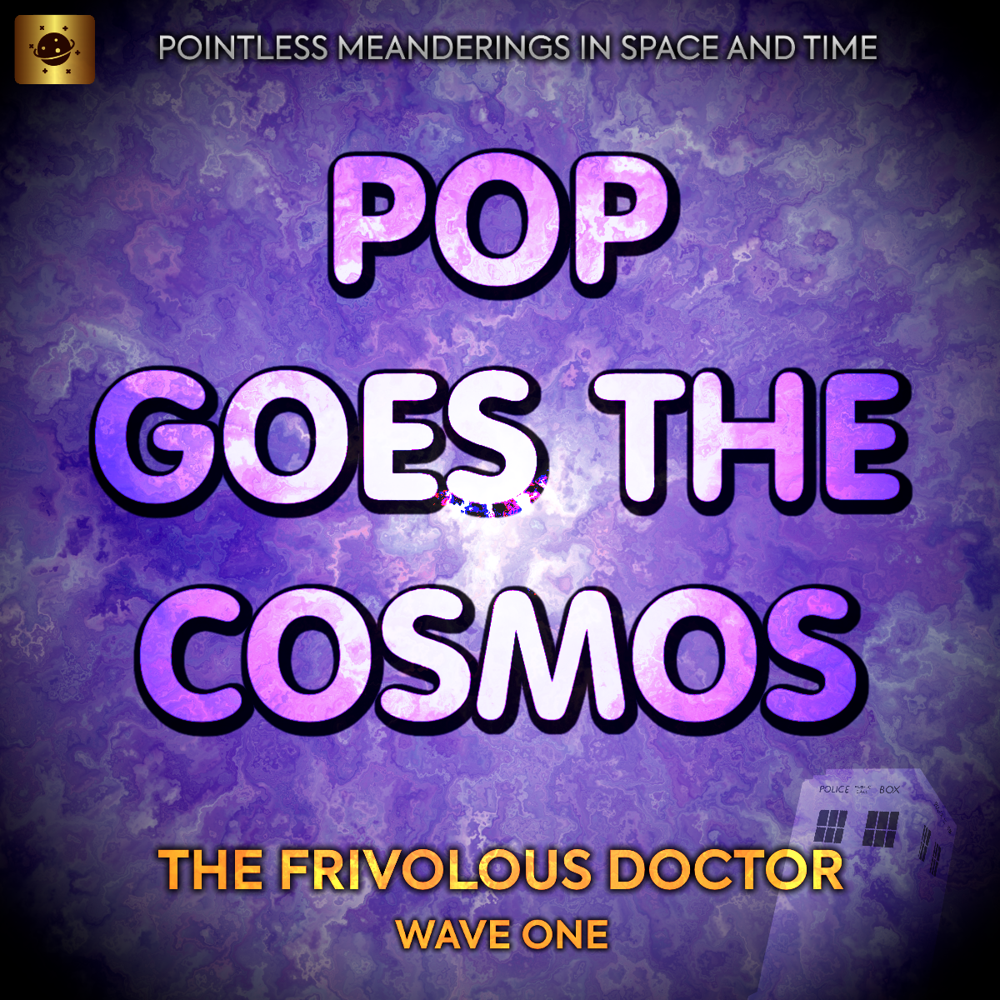

Pointless Meanderings
Pop Goes the Cosmos
Pop Goes the Cosmos

General Information
| Series | The Frivolous Doctor |
| Wave No. | 1 |
| No. of Stories | 8 |
| Companions | Gemma, Adam |
| Duration | 1h 52m 36s |
| Released | 3rd January - 16th February, 2013 |
Chronology
| Previous | ― |
| Next | Diamond in the Rough |
Pop Goes the Cosmos encompasses eight stories and is The Frivolous Doctor’s first and only wave.
Summary
Created by Lewis Christian, and based on Aimless Wanderings and Doctor Who.
Episodes
Story Arc
Ex quod meis per, ea paulo eirmod intellegam usu, eam te propriae fabellas. Nobis graecis has at, an eum audire impetus. Ius epicuri verterem ex, qui cu solet feugiat consetetur. Placerat apeirian et sea, nec wisi viderer definiebas ex, at eum oratio honestatis.